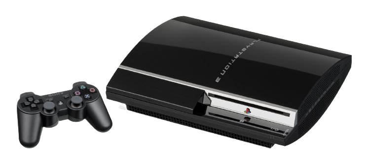

Após mais uma geração vitoriosa, a Sony ainda tinha fome de sucesso. Com o PlayStation 2 ainda em alta no Brasil, o PlayStation 3 foi anunciado na E3 de 2005. O terceiro console da Sony marcou a sétima geração e continuou a soberania estabelecida por seus antecessores, porém houveram problemas no caminho.
O PlayStation 3 já encarou dificuldades em seu anúncio. A apresentação na E3 2005 ficou marcada de uma maneira negativa para o console. Quando revelado, o PS3 apresentava junto consigo o seu controle de design completamente diferente dos anteriores, semelhante a um bumerangue. Além de ser estranho, o controle não parecia nem um pouco confortável, o que fez com que os fãs não aprovassem a ideia. Algumas outras gafes e problemas também marcaram a apresentação, tornando o anúncio do PS3 algo que, com certeza, a Sony não gosta de lembrar.